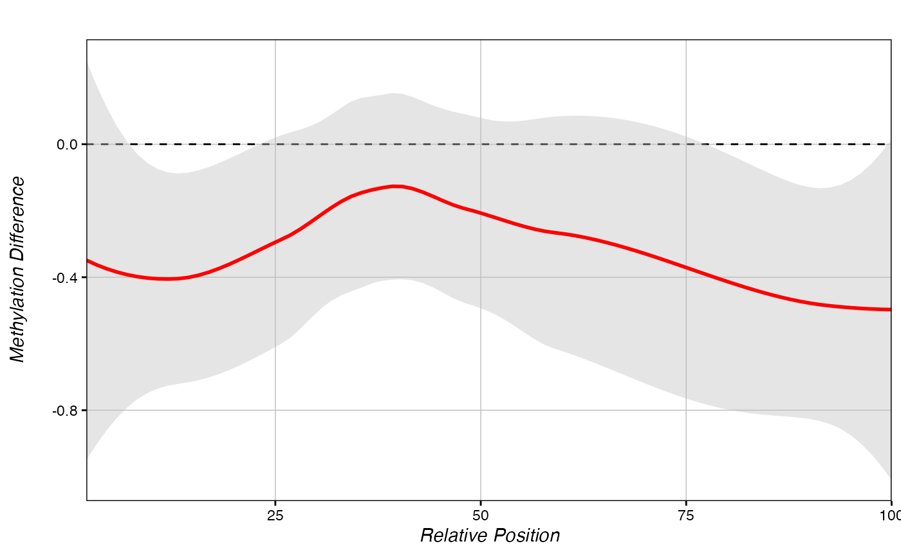
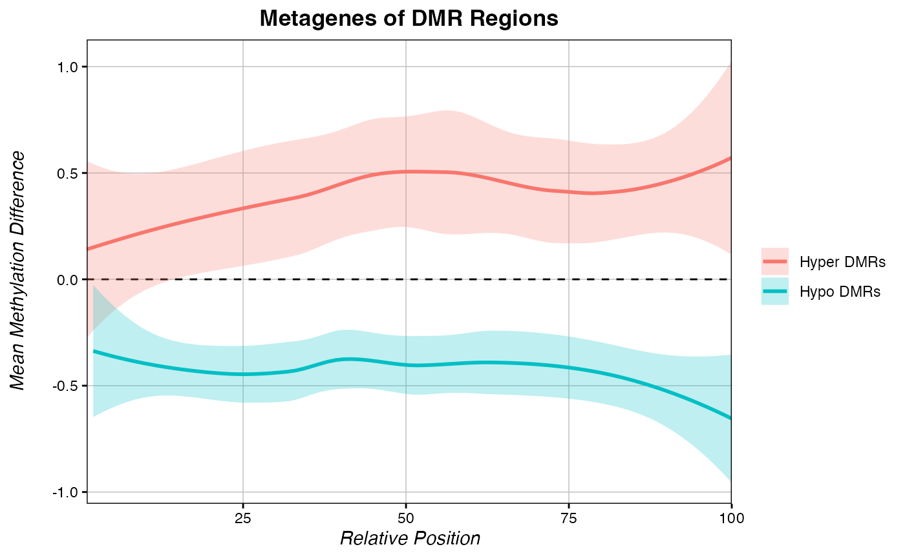

Manipulating Percent Methylation
Kathryn Lande
2024-08-01
Source:vignettes/Manipulating_Percent_Methylation.Rmd
Manipulating_Percent_Methylation.RmdWhile PCBS functions on eigenvector scores internally, users may wish to generate plots using less esoteric values, such as the mean percent methylation difference between conditions. Here we provide a brief tutorial for this type of analysis.
Generating a chromDict
chromDicts are lists of keyed data.tables that enable very fast computing times. chromDicts of eigenvector score are used internally by many PCBS functions. They can also be explicitly generated by users who wish to speed up iterative function calls. In order to easily manipulate our percent methylation values genome-wide, we can make a percent methylation chromDict object that holds the average percent methylation difference between two treatments for all filtered loci.
chromDictMethylDiff <- chromDictMeth(eigen, IDs = c("trt", "ctl"), filter_thresh = 50)Quantifying the mean methylation difference across a region
Once the chromDictMeth object is generated, methylation at a region or over a set of regions can be computed very quickly.
Get the methylation difference across one known DMR:
## [1] -0.5493768Or get the methylation difference across a set of regions:
## chr s e mean_methylDiff
## 1 chr3 4920450 4923267 -0.54937676
## 2 chr3 3961576 3963805 0.21200740
## 3 chr1 300000 302900 -0.09435562Metagenes using percent methylation difference
Like the score_metagene() function, PCBS can also generate metagenes on percent methylation using a chromDictMeth object.
methylDiff_metagene(chromDictMethylDiff, regions)
Just like score-based metagenes, you can save the data from a methylDiff_metagene() function and overlay multiple metagenes on a single plot.
# Some hypermethylated sites:
hyper <- data.frame(c=c("chr1", "chr3"),
s=c(8650728, 3960576),
e=c(8652017, 3962805))
# Some hypomethylated sites:
hypo <- data.frame(c=c("chr3", "chr3", "chr3"),
s=c(4920450, 4140014, 1340221),
e=c(4923267, 4142951, 1342791))
metagene_hyper <- methylDiff_metagene(chromDictMethylDiff, hypo, return.data = T)
metagene_hypo <- methylDiff_metagene(chromDictMethylDiff, hyper, return.data = T)
multiple_metagenes(data_list = list(metagene_hyper, metagene_hypo), # list of raw data
set_names = c("Hyper DMRs", "Hypo DMRs"), # names for elements of the data_list list
title="Metagenes of DMR Regions", legend.title = F,
yaxis = "Mean Methylation Difference")